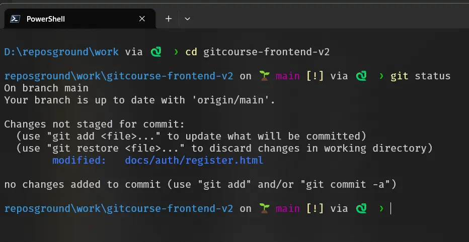

Dominar o Git exige clareza. Vamos transformar seu terminal em um painel de instrumentos profissional, rápido e intuitivo usando o Starship.
Primeiro, precisamos das ferramentas modernas da Microsoft para garantir velocidade e suporte a cores.
A. Instale o Windows Terminal:
winget install Microsoft.WindowsTerminalB. Instale o PowerShell Moderno (Versão 7+):
winget install --id Microsoft.PowerShell --source wingetPara enxergar os ícones (🐍 e 🌱), seu terminal precisa de uma fonte especial. Recomendamos a Fira Code.
winget install NerdFonts.FiraCodeAgora instalamos o Starship e ensinamos o PowerShell a iniciá-lo automaticamente.
winget install Starship.StarshipEdite seu perfil de usuário:
notepad $PROFILECole esta linha ao final do arquivo, salve e feche:
Invoke-Expression (&starship init powershell)Crie o arquivo de configuração para ter o visual exato do curso:
notepad ~/.config/starship.tomlCopie e cole o código abaixo:
# Configuração Oficial - Curso de Git Charles Duarte
format = "$directory$git_branch$git_status$python$character"
[directory]
style = "cyan"
truncation_length = 3
[git_branch]
symbol = "🌱 "
style = "bold purple"
[git_status]
style = "bold yellow"
staged = "+"
modified = "!"
untracked = "?"
[python]
symbol = "🐍 "
format = "via [$symbol$version]($style) "
style = "bold green"
[character]
success_symbol = "[❯](bold green)"
error_symbol = "[❯](bold red)"
Seu terminal agora deve se parecer com este snapshot:

Note como a 🐍 Versão do Python e a 🌱 Branch ficam visíveis de imediato!